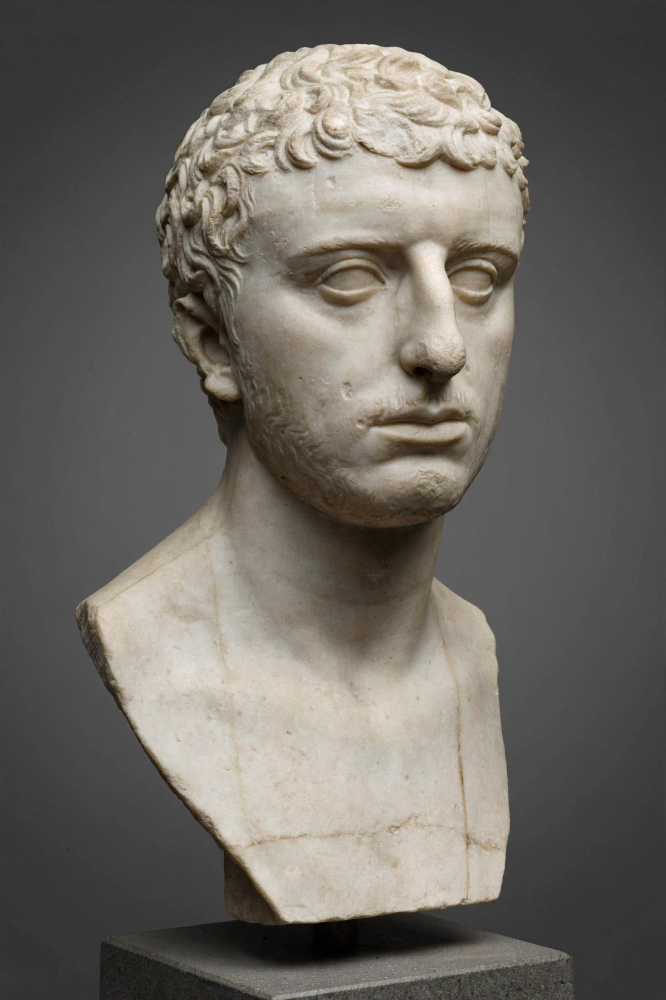

Josephus
From Wikipedia, the free encyclopedia

Flavius Josephus (born Yosef ben Matityahu, c. AD 37 – c. 100) was a Roman-Jewish historian and military leader born in Jerusalem. Captured in the First Jewish–Roman War after commanding the defence of Galilee, he became a Flavian client and wrote — in Greek, for Roman readers — The Jewish War and the Jewish Antiquities, works that are indispensable (and endlessly debated) sources for the history of Second Temple Judaism, the Judaean revolt, and the world of the New Testament.
Life
Of priestly and royal descent, Josephus visited Rome at 26, joined the revolt of 66, and at Jotapata survived a suicide pact by lot — surrendering to Vespasian, whom he prophesied (conveniently and successfully) would become emperor. Freed, he took the Flavian name, accompanied Titus at the siege of Jerusalem as interpreter, and spent his later life in Rome writing under imperial patronage.
Works and controversies
The War (c. 75) narrates the revolt self-exculpatorily; the Antiquities (c. 93) retells Jewish history from creation to 66 AD for a Gentile audience, and contains the famous Testimonium Flavianum passage about Jesus — surviving in a form Christian copyists at least partly interpolated — and a shorter, widely accepted reference to 'James, brother of Jesus'. His Against Apion defends Judaism against Alexandrian slanders, and his Life answers rivals' charges about Galilee.